Tantárgy Ismertetése
Ezt a tantárgyat 12. évfolyamban tanultuk. Az év elején megtanultuk hogyan működnek a PLC-k, milyen fajtái vannak emellett átvettük a létra, blokk diagram nyelv programozását. Második félévben megtanultuk hogyan programozzunk állapotgépben ami jóval egyszerűsítette és megnyitotta a lehetőségeket nagyobb projectekre is.
Projekt: Lift vezérlés
Ebben a feldatban egy működő liftet kellett leprogramozni, amihez állapot gépet használtam , ami annyit takar hogy egy datablockban meghatározunk egy változót ami a lift aktuális állapotát jelöli, és ez alapján történik a vezérlés. A projekt során a liftnek 3 állomása van, és a feladat az volt hogy a lift helyesen reagáljon a gombok megnyomására, és biztonságosan működjön.
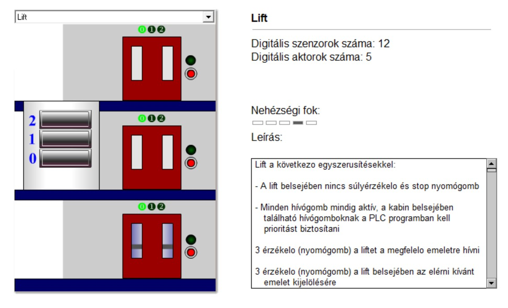
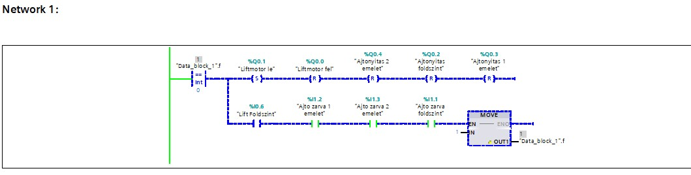
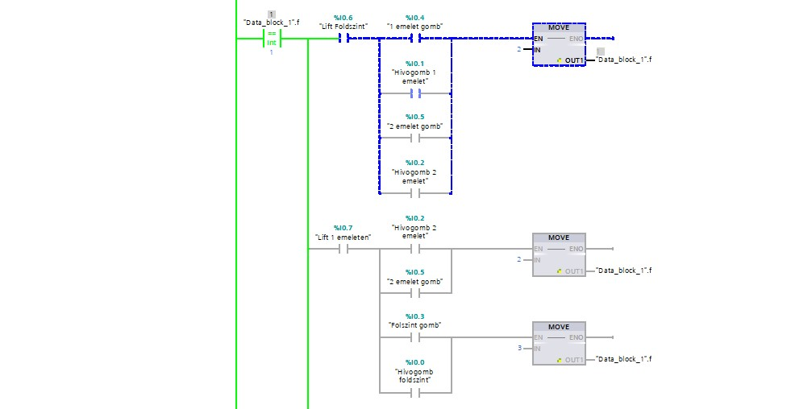
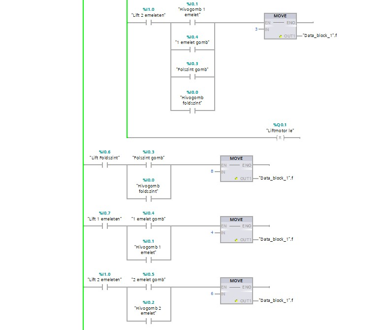
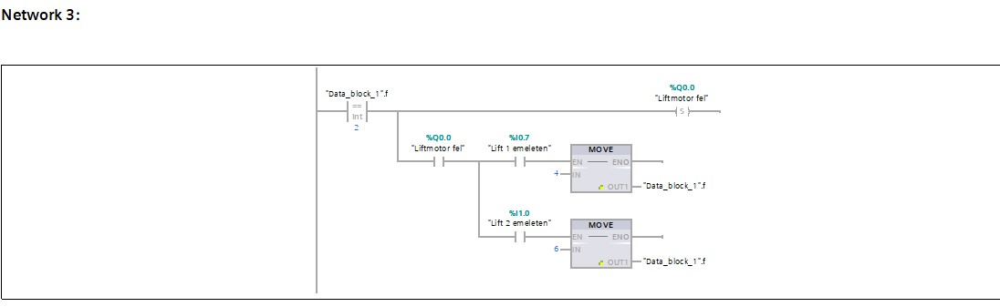
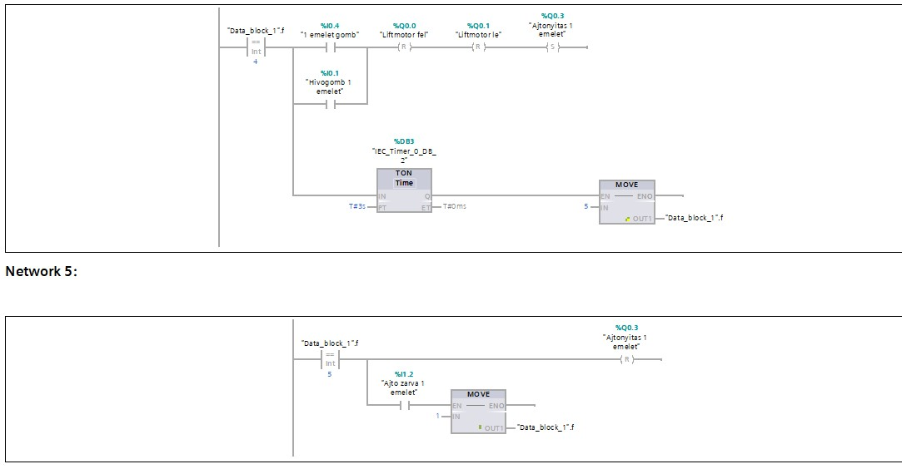
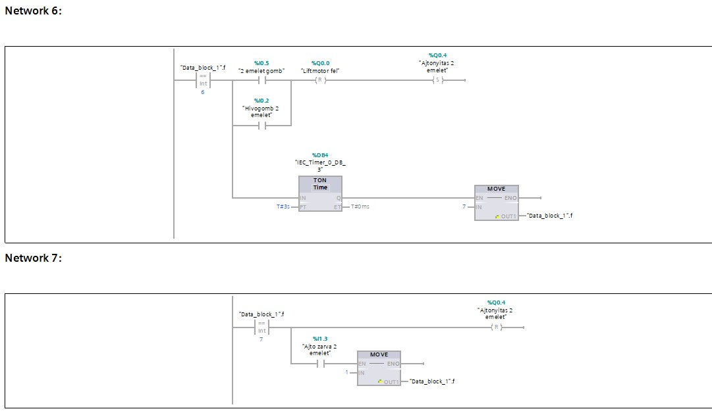
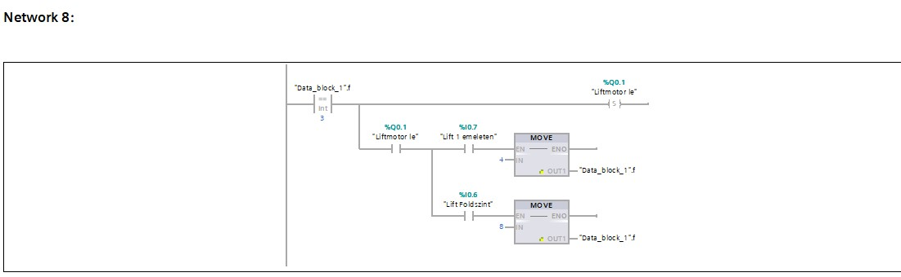
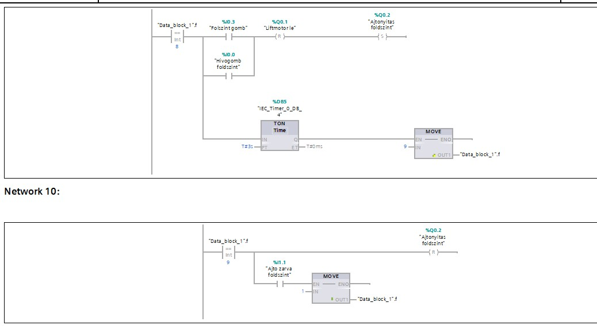
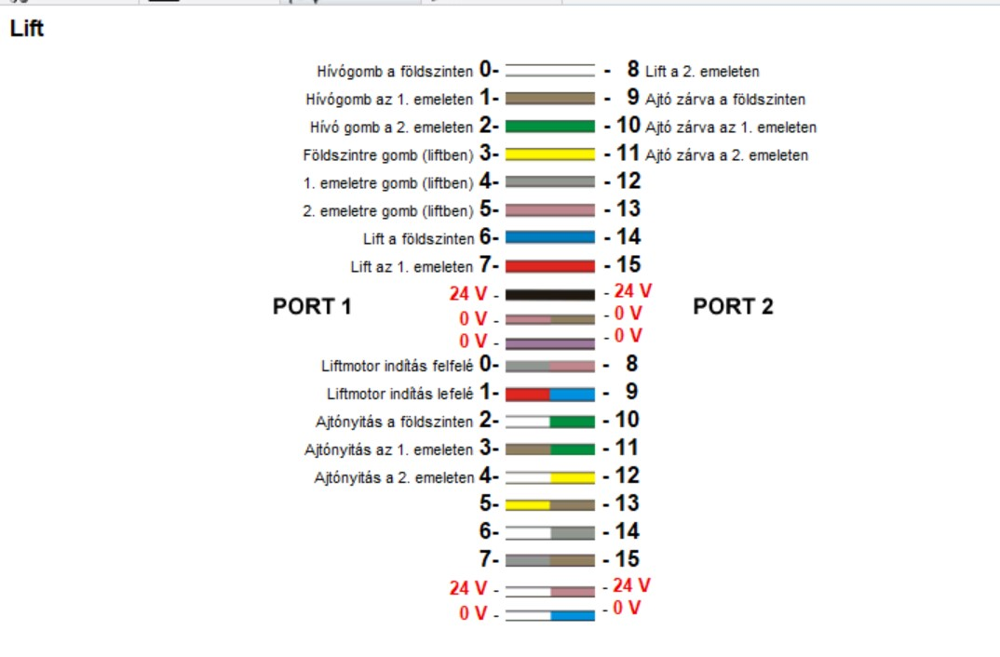
Így kötöttem be a PLC-t a Laptoppal a szimulációhoz
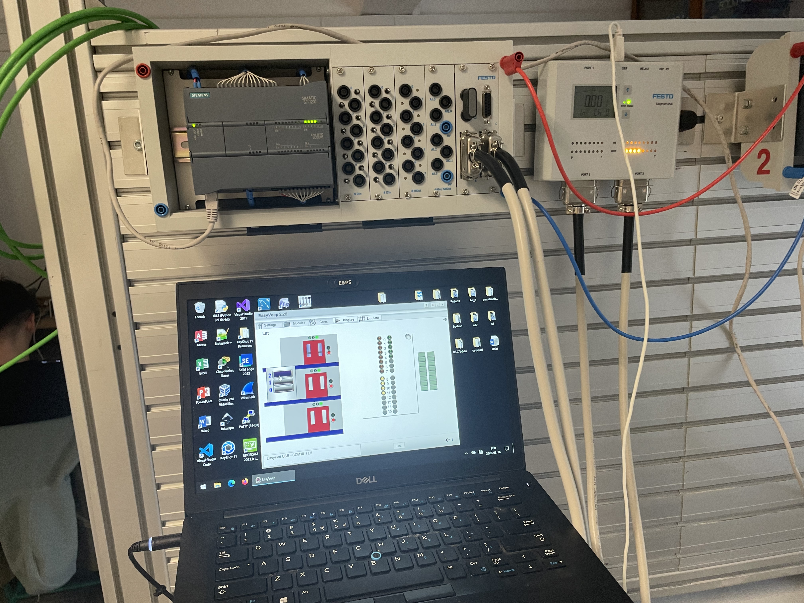
Videó a lift működéséről
Projekt: Golyóválogató rendszer
Ebben a projectben egy golyoválogató állomást kellett leprogramozni ami kiválogatja a 3 különböző anyagú golyókat(alumínium,fehér,sárga műanyag) 3 különböző csatornába.
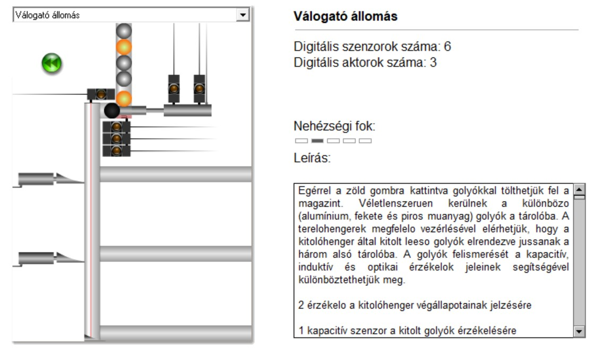
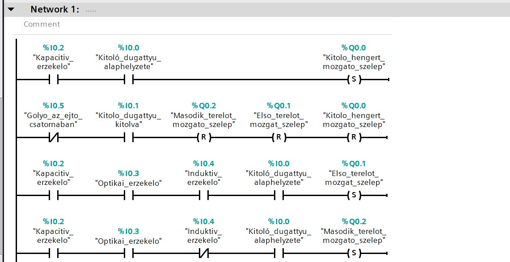
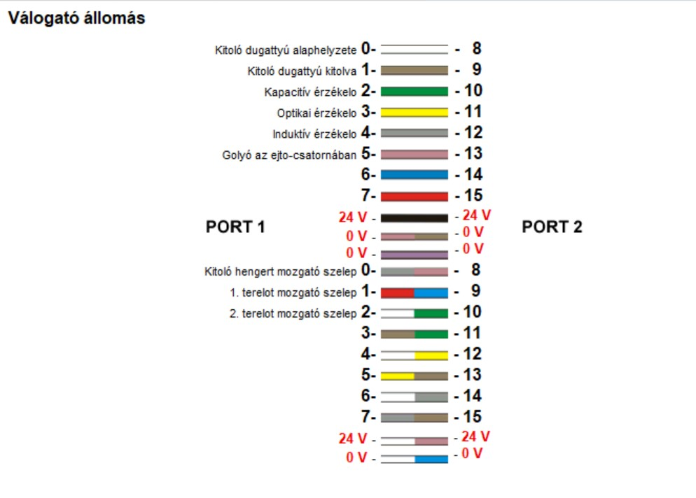